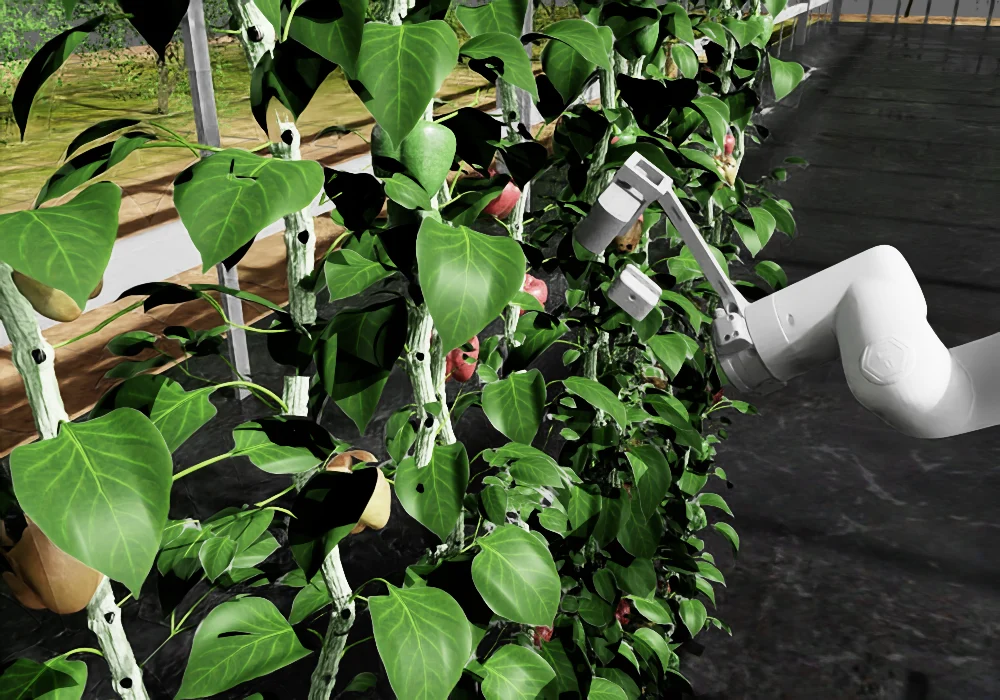
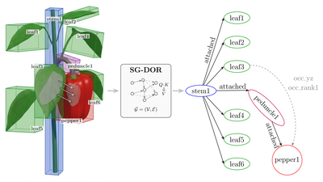
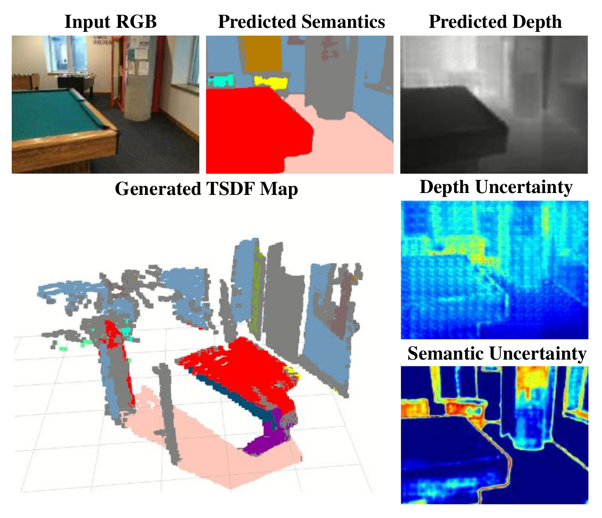
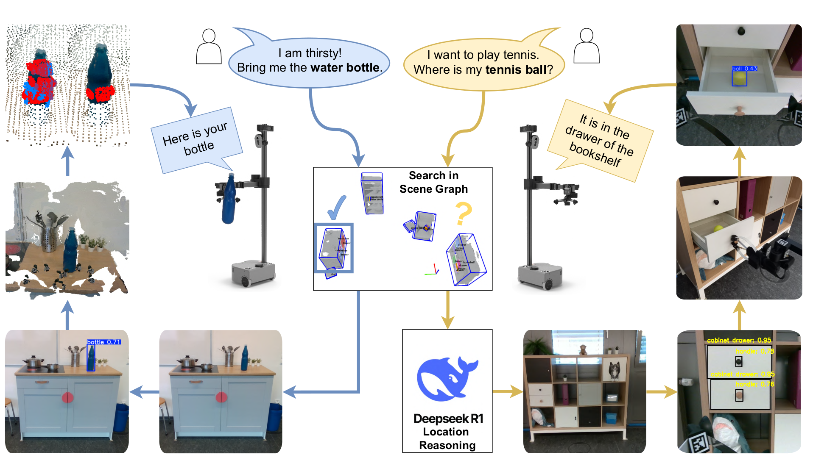
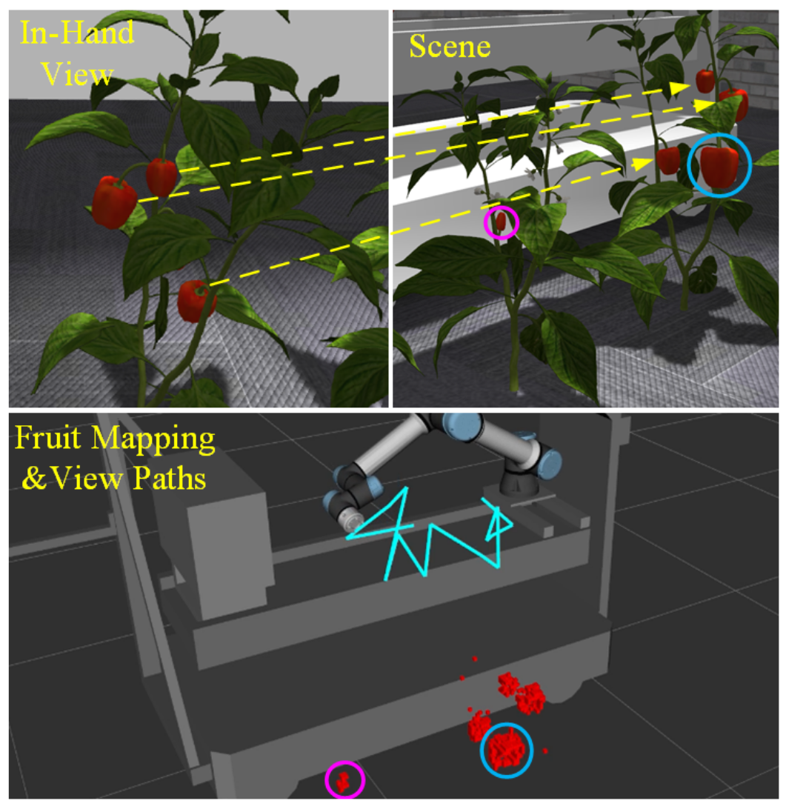
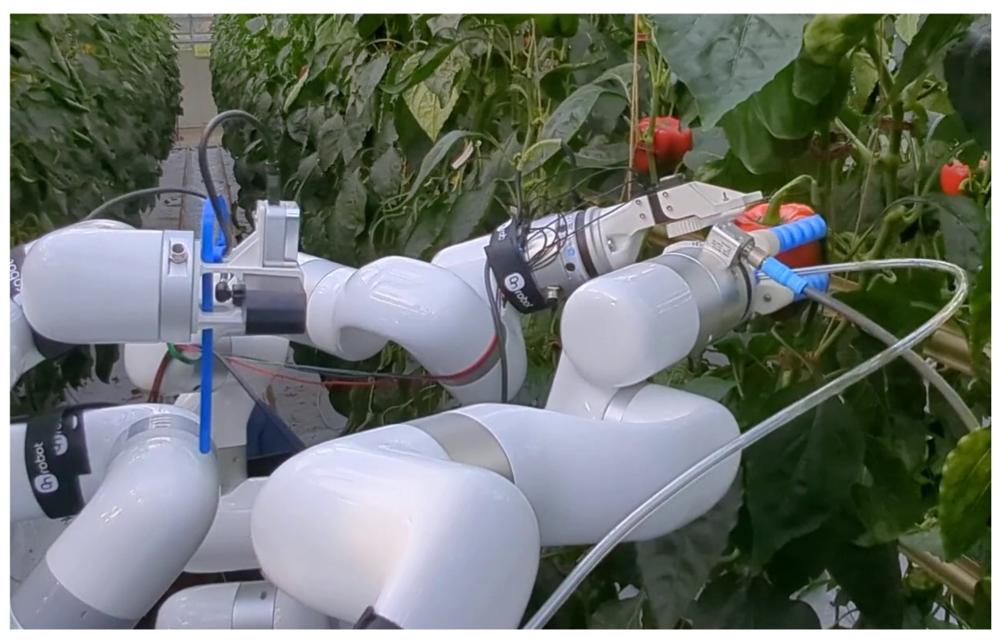
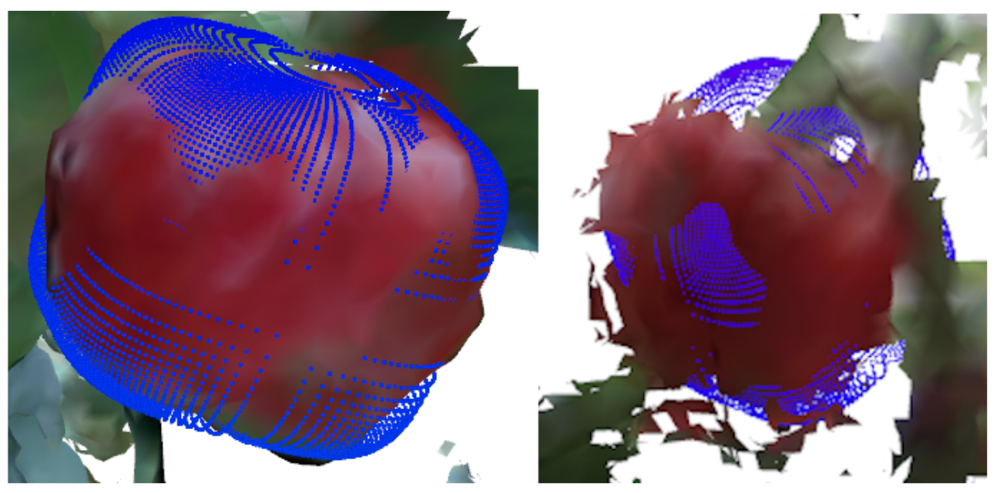

Perception under incomplete observations
Shape completion, uncertainty and persistent mapping.
My work studies how priors and partial observations can guide robotic perception, search and manipulation.
Shape completion, uncertainty and persistent mapping.
Scene graphs, open-vocabulary object search and view planning.
Mobile manipulation, multi-arm systems and shared autonomy.

SG-AMP connects uncertainty-aware depth completion, persistent panoptic mapping, plant scene graphs and view-motion planning for inspecting occluded crops. It achieved 55.27% semantic mIoU, 38.67% PQ and 40.62 mm depth RMSE on pepper data.

SG-DOR uses direction-conditioned scene graphs to infer plant-part attachments and rank leaves that obstruct a pepper from a chosen approach direction. It achieved 0.73 occlusion F1 and 0.85 NDCG@3.
O-STaR searches for relocated and concealed objects by grounding language-model priors in scene geometry and updating beliefs on a dynamic scene graph. It was validated on Stretch and in 60-day simulated scenarios; an extended version is under review at ICRA 2027.

EvidMTL introduces evidential depth and semantic heads with a new evidential depth loss that calibrates predictive belief strength from monocular RGB. EvidKimera uses these uncertainties for consistent 3D mapping and outperformed Kimera by 30% in zero-shot ScanNetV2 semantic surface mapping accuracy and consistency.

Stretch-Compose combines spatial, semantic and geometric reasoning to retrieve relocated or concealed objects from an outdated map. Real-robot trials achieved 100% navigation and open-space detection while reducing concealed-space search time by 68%.


I developed HortiBot’s full perception stack, including real-time pepper, peduncle and stem detection, online data association, and a scene-graph world model of pepper plants. The integrated three-arm system used active perception and dual-arm manipulation for selective harvesting of real peppers.
I co-developed DawnIK, which expresses inverse-kinematics and collision constraints as weighted costs in a nonlinear optimizer, without requiring inverse-Jacobian computation or redundant degrees of freedom. Against CollisionIK, it produced no collisions in any evaluated multi-arm scenario and improved trajectory tracking when collision risk was low.
I developed NBV-SC to synthesize targeted views of predicted missing fruit surfaces and reject redundant samples using viewpoint dissimilarity. It improved fruit-size estimation and reconstruction, reduced viewpoint-sampling time by 80–90% in the harder simulated scenarios, and was demonstrated with a UR5e in a commercial glasshouse.

Fruit Mapping fuses segmented RGB-D observations into a real-time TSDF map, clusters the reconstructed fruit surfaces, and fits optimized superellipsoids to estimate complete shapes and volumes despite occlusions. It accurately estimated fruit volumes in simulated multi-plant scenarios and recovered pepper shapes from data recorded in a commercial glasshouse.
My MSc thesis combined a dense graspability map with dynamic virtual fixtures that adapted online to the operator’s commanded motion: the user controlled translation while the system oriented the hand and automated grasp closure. In a SpaceMouse user study, the semi-autonomous mode reduced task-completion time and subjective workload compared with pure teleoperation.